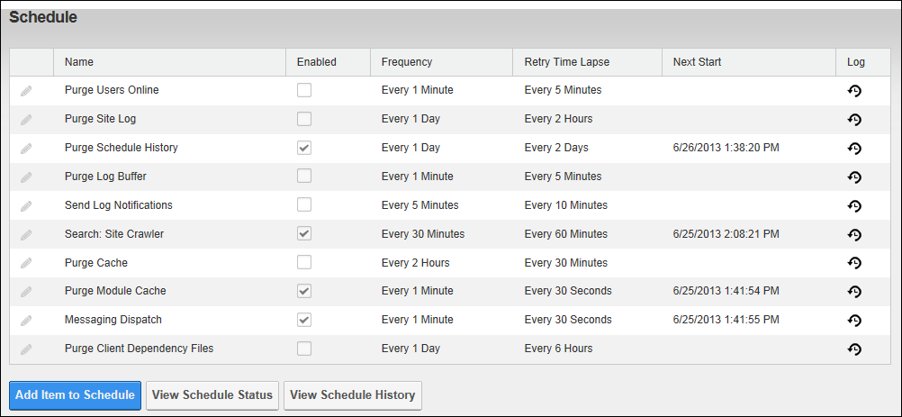

The Schedule page (Host > Advanced Settings  Schedule) allows SuperUsers to run tasks against the DNN database at scheduled intervals. The Schedule optimizes the efficiency of a site by reducing the frequency of common tasks. The Schedule cannot be deployed to other site pages.
Schedule) allows SuperUsers to run tasks against the DNN database at scheduled intervals. The Schedule optimizes the efficiency of a site by reducing the frequency of common tasks. The Schedule cannot be deployed to other site pages.
Important. The Schedule module must be enabled and configured.

The Schedule - DNN Platform

The Schedule - Evoq Content and Evoq Content Enterprise